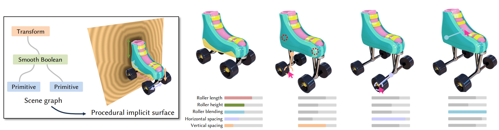
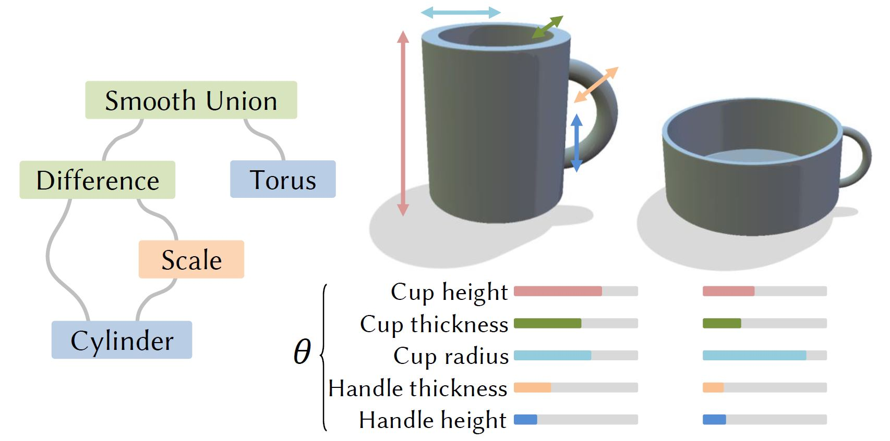
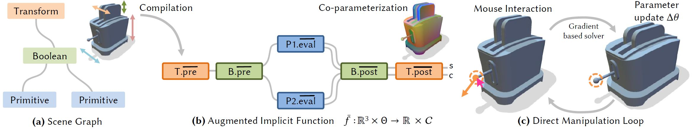
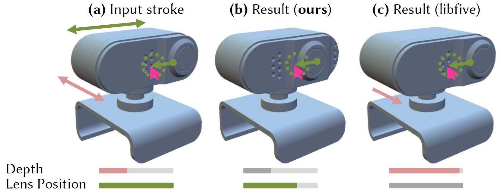
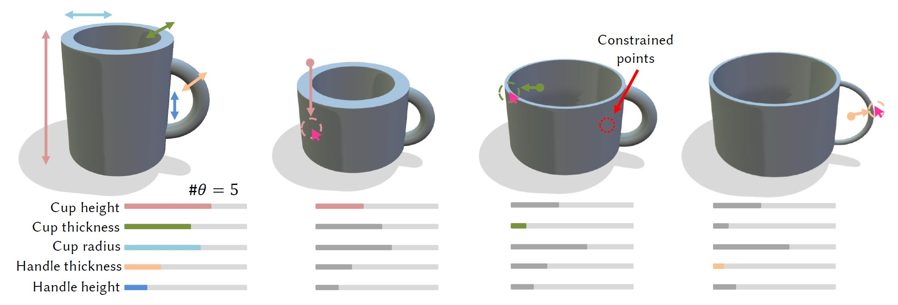
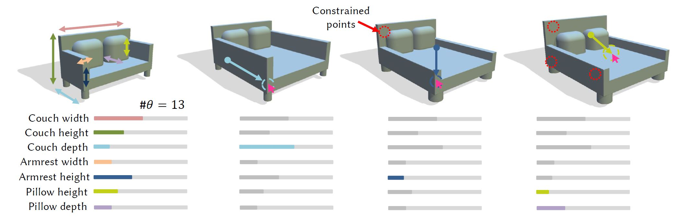
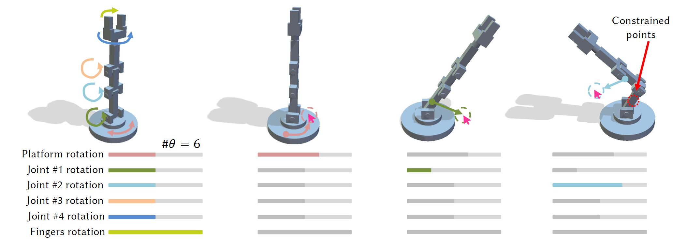
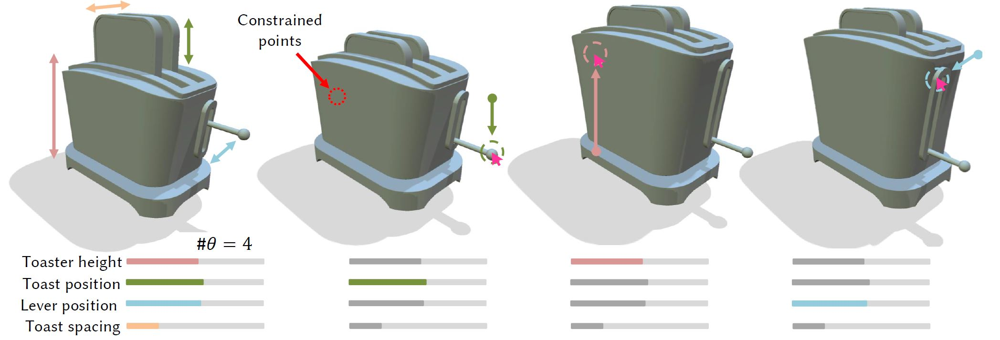
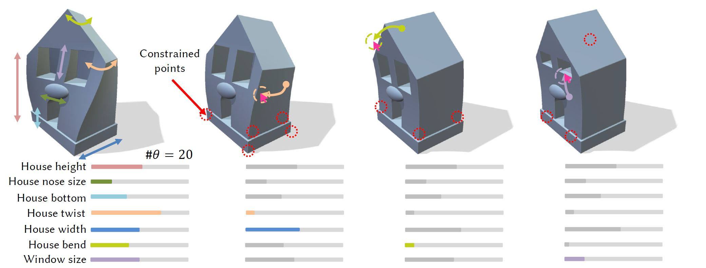
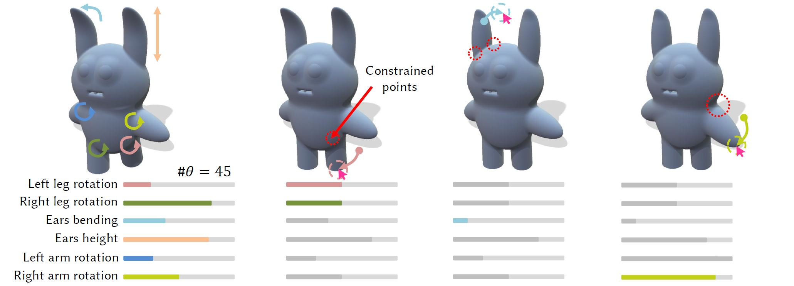

Our method enables the direct manipulation of procedural implicit surfaces through mouse strokes in the viewport. We estimate an update of the procedural parameters of the implicit surface that matches the user intent thanks to the auto-differentiation of an augmented version of the implicit function. As opposed to the typical workflow of updating parameters through sliders, our method enables a more direct and intuitive editing process.
Procedural Implicit surfaces are a popular representation for shape modeling. They provide a simple framework for complex geometric operations such as Booleans, blending and deformations. However, their editability remains a challenging task: as the definition of the shape is purely implicit, direct manipulation of the shape cannot be performed. Thus, parameters of the model are often exposed through abstract sliders, which have to be non-trivially created by the user and understood by others for each individual model to modify. Further, each of these sliders needs to be set one by one to achieve the desired appearance. To circumvent this laborious process while preserving editability, we propose to directly manipulate the implicit surface in the viewport. We let the user naturally interact with the output shape, leveraging points on a co-parameterization we design specifically for implicit surfaces, to guide the parameter updates and reach the desired appearance faster. We leverage our automatic differentiation of the procedural implicit surface to propagate interactions made by the user in the viewport to the shape parameters themselves. We further design a solver that uses such information to guide an intuitive and smooth user workflow. We demonstrate different editing processes across multiple implicit shapes and parameters that would be tedious by tuning sliders.
Video
Workflow

Our input is a procedural implicit shape represented by a scene graph (left), combining primitives, transformations Boolean operations, etc. Procedurally-defined shapes allow users to create a large variety of instances $\Phi(\theta)$ by tweaking the procedural parameters $\theta$ (right), but this is a nontrivial task as the user must understand the influence of each individual parameter over the model.

Overview of our method. Starting from a scene graph representation of an implicit surface (a), we automatically augment it so that the resulting implicit function $\bar{f}$ computes both the implicit value $s$ and a co-parameter $c$ that identifies the evaluation point in space (b). We do this by replacing the eval, pre, post functions of the different nodes. This allows the estimation of the derivative of a position with respect to the procedural parameters of the shape, which in turn is used to modify them in order to match the user stroke (c).

When the user intends to drag points in a direction significantly different than the local surface normal (a), our direct manipulation approach keeps track of the dragged point (b) while libfive’s solver only constrains that the overall surface passes by the new mouse position (c). In this very example, libfive is never able to affect the lens position parameter.
Results






Editing sessions performed using our framework. For each example, the first image represents the original procedural implicit shape with a simplified semantical representation of its procedural parameter. The remaining images show the outcome of three consecutive edits that are performed on the implicit shape, including both constrained and unconstrained manipulations. For each edit, we report the selected points and the mouse trajectory, highlighting the procedural parameter update in the underlying sliders.
Citation
@article{riso24direct,
title = {Direct Manipulation of Procedural Implicit Surfaces},
author = {Riso, Marzia and Michel, Élie and Paris, Axel and Deschaintre, Valentin and Gaillard, Mathieu and Pellacini, Fabio},
journal = {ACM Transaction on Graphics (SIGGRAPH Asia '24 Conference Proceedings)},
year = {2024},
publisher = {ACM},
doi = {10.1145/nnnnnnn.nnnnnnn},
}